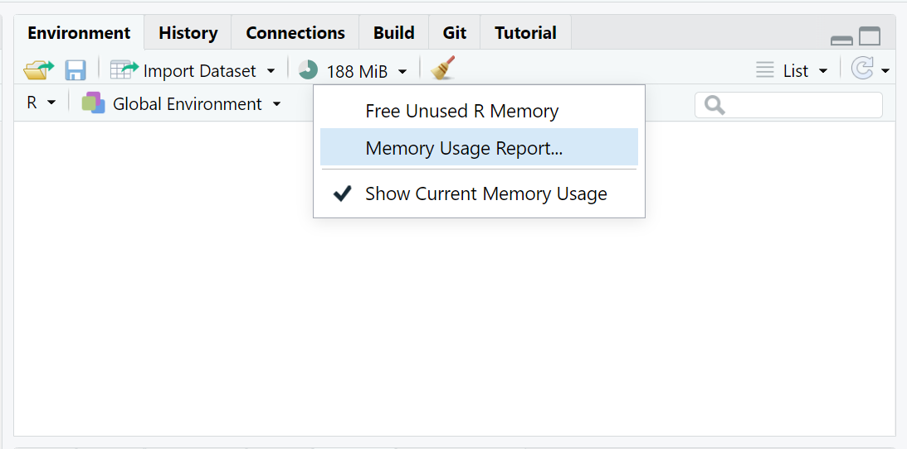
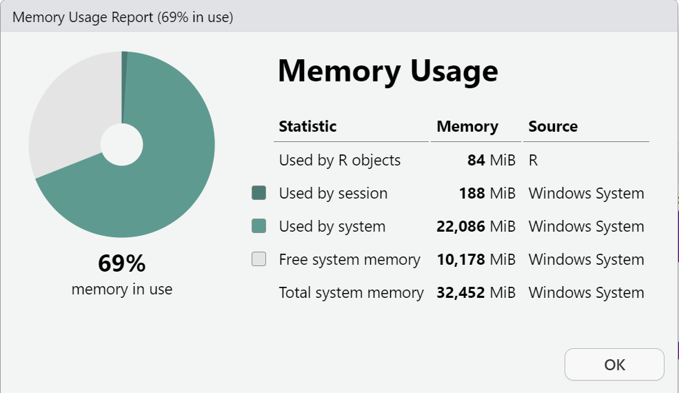
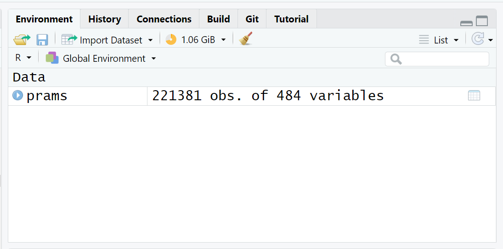
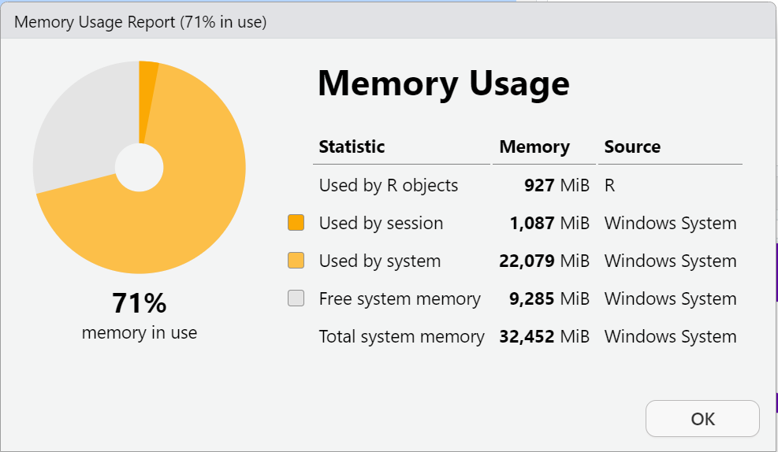
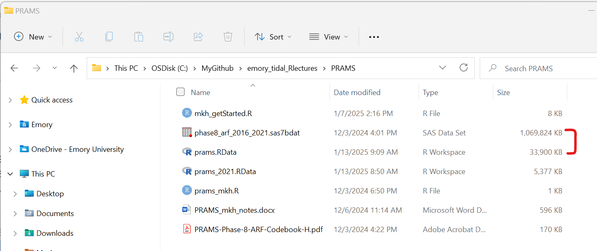
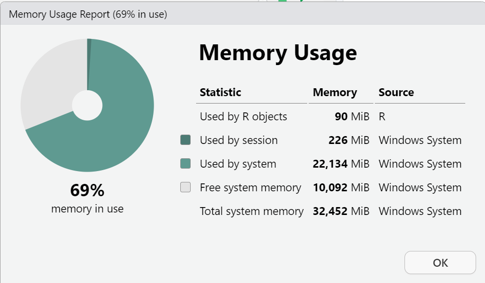

PRAMS Data Analysis
(Asynchronous-Online)
PRAMS Data
About PRAMS
PRAMS is the Pregnancy Risk Assessment Monitoring System (PRAMS). According to the CDC’s website for About PRAMS:
PRAMS is the Pregnancy Risk Assessment Monitoring System. It is a joint surveillance project between state, territorial, or local health departments and CDC’s Division of Reproductive Health. PRAMS was developed in 1987 to reduce infant morbidity and mortality by influencing maternal behaviors before, during, and immediately after live birth.
The purpose of PRAMS is to find out why some infants are born healthy and others are not. The survey asks new mothers questions about their pregnancy and their new infant. The questions give us important information about the mother and the infant and help us learn more about the impacts of health and behaviors.
Getting the PRAMS Data
- You can request the PRAMS Data from the CDC.
- Once granted access, follow the instructions from the CDC to download the data and sign the data sharing agreement.
- For the purposes of the TIDAL R training session, we will be working with PRAMS Phase 8 ARF (Automated Research File) dataset.
PRAMS Documentation and Resources
- See the details on the PRAMS Questionnaires.
- Learn more about the PRAMS Data Methodology including details on how the samples are weighted.
- Download and Read this helpful paper on PRAMS design and methodology (Shulman, D’Angelo, Harrison, Smith, and Warner, 2018).
- There are also helpful tutorial videos on working with PRAMS data by ASSOCIATION OF STATE AND TERRITORIAL HEALTH OFFICIALS (ASTHO.org).
0. Prework - Before You Begin
Install R Packages
Before you begin, please go ahead and install (or make sure these are already installed) on your computer for these following packages - these are all on CRAN, so you can install them using the RStudio Menu Tools/Install Packages interface:
Create a NEW RStudio Project
BEFORE you being any new analysis project, it is ALWAYS a good idea to begin with the NEW RStudio project.
Go to the RStudio menu “File/New Project” and create your new project (ideally in a NEW directory, but it is also ok to use an exisiting directory/folder on your computer).
This new directory (or folder) will be where all of your files will “live” for your current analysis project.
See the step-by-step instructions for creating a new RStudio project in Module 1.3.2.
1. Get PRAMS Data and Select Subset for Analysis
A. Read-in the PRAMS Phase 8 2016-2021 combined dataset
The PRAMS data provided by the CDC will be in SAS format (*.sas7bdat). We can read the native SAS file into R using the haven package and the read_sas() function.
The size of the phase8_arf_2016_2021.sas7bdat dataset is a little over 1GB. So, make sure your computer has enough available memory to fully load this dataset. I will provide some more details below on how we can reduce the size of the dataset and improve the memory issues below.
You can check your available memory, by checking your “Global Environment” TAB (upper right window pane) click on the down arrow next to the icon with “XX MiB” just to the left of the little broom:

Click on the “Memory Usage Report” to see a detailed breakdown. This window will show:
- Memory used by R objects (in your “Global Environment”)
- Memory used on your computer by your current R Session
- Memory currently in use for everything currently running on your computer (all apps running - active and in background) - you can compare this to your “task manager” memory viewer.
- Free System Memory - when this gets low the “XX MiB” graphic will change color from green - to yellow - to orange - to red. Once you get to red, your R session will most likely crash since there is not enough memory to perfom operations or run analyses.
This is a screen shot of my computer (yours will look different) BEFORE I load the PRAMS dataset.

Run the following R code to load the PRAMS Phase 8 dataset into your R Session and check the “Global Environment”.
Here is my memory AFTER loading the PRAMS dataset into my “Global Environment”.


B. Save the data as a *.RData binary file for use in later analyses
One way to reduce the size of the PRAMS dataset is to save it as a native *.RData binary file format. So, let’s save the PRAMS dataset in this format on your computer.
# save the whole dataset as *.RData format
save(prams,
file = "prams.RData")On my computer, here is a comparison of the size of these 2 files:
-
phase8_arf_2016_2021.sas7bdatis 1,095,499,776 bytes (which is 1.02 GB) -
prams.RDatais only 34,713,319 (which is only 0.0323 GB)
This is a file size reduction of 96.83%!!

Now that we’ve reduced the file size of the dataset on your computer’s hard drive (or cloud storage), let’s also clear up the “Global Environment” back in your current RStudio computing session.
C. Clean up files to save memory
Now that we’ve saved the data, let’s remove the PRAMS data object from the RStudio session.
- For now we can simply remove everything using the
rm(list=ls()). - However, if you have other objects you want to keep, you can specifically only remove the PRAMS dataset using
rm(prams).
# remove all objects from Global Environment
rm(list=ls())
# confirm Global Environment is empty
# list all objects
ls()character(0)# and free any currently unused memory
gc() used (Mb) gc trigger (Mb) max used (Mb)
Ncells 2107864 112.6 4135958 220.9 4135958 220.9
Vcells 3850988 29.4 153275530 1169.4 112103535 855.3After we remove everything, let’s look at the session memory again.

Now let’s read the PRAMS data back in, but this time read in the prams.RData binary R data formatted file. We will use the built-in load() function.
# load back only the prams dataset
load(file = "prams.RData")Let’s check the R session memory again:
I know this didn’t make a large difference for the R session available memory, but by doing this process:
- The PRAMS dataset now takes up less memory on your computer’s file storage, and
- The
load()function for theprams.RDatafile should run faster when beginning your R computing session instead of having to use thehavenpackage to read in the SAS formatted file everytime.
As a quick comparison on my computer (Windows 11), the time to read in the SAS formatted file was about 14 sec:
> system.time(
+ prams <-
+ read_sas("phase8_arf_2016_2021.sas7bdat")
+ )
user system elapsed
13.44 0.47 13.96And the time to read in the prams.RData file was only about 1.5 sec.
> system.time(
+ load("prams.RData")
+ )
user system elapsed
1.45 0.08 1.54 2. Getting started with PRAMS Data
Breastfeeding summary - UNWEIGHTED data
Let’s look at whether the mother ever breastfed her baby - this is variable BF5EVER, where 1 = “NO” and 2 = “YES”.
For the UNWEIGHTED data, let’s get a simple table of breastfeeding by STATE (variable STATE) and YEAR (variable NEST_YR).
As we can see below, in 2017 for the state of GA, 919 women responded to this question:
- 919 women responded
- 170 said NO
- 749 said YES
- 36 were missing a response (indicated by
<NA>)
BF5EVER.f
STATE NO YES <NA>
AK 71 927 47
AL 181 659 42
CO 73 1037 18
DE 126 728 37
GA 170 749 36
IA 136 867 30
IL 140 1048 36
KS 81 856 58
KY 139 536 27
LA 285 586 23
MA 115 1268 40
MD 97 928 35
ME 88 754 30
MI 290 1532 75
MO 166 908 37
MT 66 851 20
ND 102 472 17
NH 42 523 15
NJ 125 1102 31
NM 123 1038 19
NY 109 706 33
PA 164 1023 42
PR 81 928 23
RI 105 960 37
SD 150 946 35
UT 93 1305 49
VA 88 969 26
VT 54 780 14
WA 69 1138 31
WI 221 1051 74
WV 186 475 38
WY 49 438 16
YC 99 1125 69This aligns with the CDC PRAMS Indicators Report for GA in 2020 - scroll to the bottom to see the RAW count of 919 women who responded to “Ever Breastfed” in GA in 2017.
Breastfeeding summary - WEIGHTED data
In the CDC PRAMS Indicators Report for GA in 2020 the columns that have the 95% CI (confidence intervals) for the percentages are the population weighted percentage estimates for the Stats of GA during that year.
To get the estimated percentage of women in the stats of GA who had “ever breastfed” in 2017, we need to use the survey package and apply the proper sample weighting to get these estimates.
From this we can see that the population estimates for 2017 are:
- Breastfed ever = NO: 17639.96 +/- 2045.415
- Breastfed ever = YES: 101686.10 +/- 2271.075
This leads to a percentage of YES estimate of 101686.10 * 100 / (101686.10 + 17639.96) = 85.2170096% which should match pretty closely to what is in the CDC PRAMS Indicators Report for GA in 2020.
We can also get the percentage of overall breastfeeding YES for the USA for the 40 “states” (technically 38 states, Puerto Rico, and New York City) that were included in the PRAMS dataset in 2020 (see the last column in the CDC report), using the following R code. Note: 2 “states” did not have data in 2020: Connecticut and Florida.
From this we can see that the population estimates for the “whole USA” for 2020 were:
- Breastfed ever = NO: 225560.3 +/- 4884.871
- Breastfed ever = YES: 1609464 +/- 5540.240
This leads to a percentage of YES estimate of 1609464 * 100 / (1609464 + 225560.3) = 87.7080483% which is pretty close to what is in the CDC PRAMS Indicators Report for GA in 2020 - with some numerical precision variation due to software algorithms.
Congratulations on getting started with the PRAMS Dataset
3. Data Wrangling with PRAMS
Examples will be posted here working with the PRAMS Dataset for recoding, creating or modifying variables.
4. Visualizing PRAMS Data
Examples will be posted here for making graphs and figures with suggestions on handling very large datasets.
5. Missing Data in PRAMS
Examples will be posted here for summarizing and visualizing missing data in PRAMS.
6. PRAMS Statistical Tests and Models
Examples will be posted here for statistical tests and models (such as linear and logistic regression) for both the unweighted and weighted data approaches.
7. PRAMS Reproducible Research Report
A Rmarkdown analysis report will be provided here as a template to “kick start” your research with the PRAMS dataset.